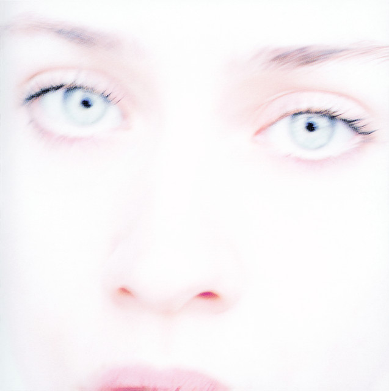

Music is my most important and prominent feature. I am consumed by the endless facets music can entail. Here's what I have been into lately:
Artist/Band of the Week
Check out Isabelle, a French ye-ye singer. Quand Michel Chante or When Michel Sings is a great starting point.
Album of the Week
As we step into the early stages of autumn (and all though the weather is not all reflecting that), I found myself enjoying this album. Fiona Apple's debut, Tidal, is a sound introduction to the jazzy and instrumentally gift she has perfect. Laden with emotions like melancholy, rage, and nostalgia. This album should be listened to while observing turning trees on a walk. I especially love her use of the vibraphone through out.
Song of the Week
In light of all of this Rapture talk (take this lightly please), we can't forget the gem of an album that is Siouxsie and the Banshee's "the Rapture". Forever is a tune that conveys existential yearning and devastation. "Flooding ascent in synchonicity" a reminder of divine intervention and that everything happens for a reason.
At the moment, I am also into Lily Chou Chou, Ben Kwellar's "Cover the Mirrors", Americana, French electronica soundtracks (The Virgin Suicides and Fantastic Planet), The Hollies, Robert Lester Folsom, and Dean Blunt and affiliates.
Press my sweet hover button to check out more.